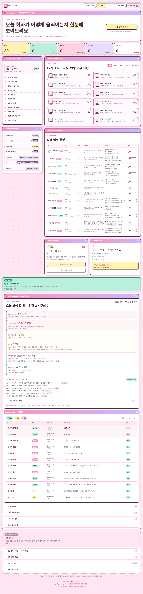
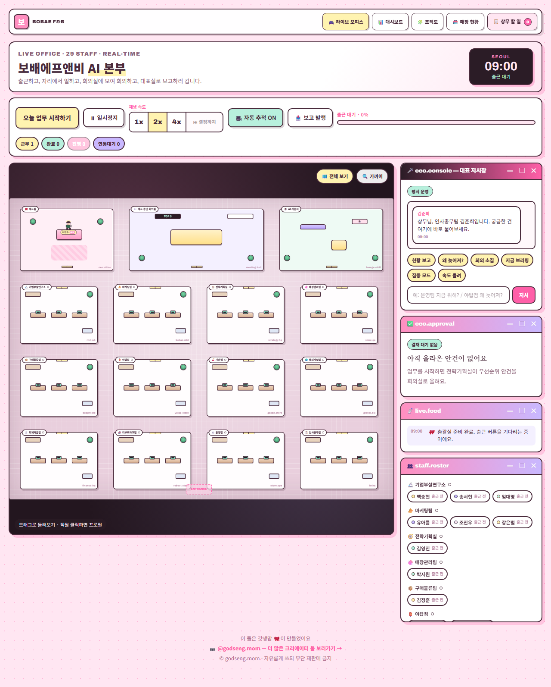

주식회사 보배에프앤비 · 사내 한정
촬영 2026년 7월 31일 오전 11:12 POS 실측 2026-07-30 20:08주간보고 2026-07-30 20:08
경영 지표 · 외부 신호 · 팀 현황 · 가상 성과를 한 화면에 모은 실무 화면입니다.

눌러서 원본 크기로 보기 · 965KB
12개 팀이 실제 업무 기록에 따라 움직이는 화면입니다. 사람이 만든 실적이 아니라 데이터로 돌아가는 시뮬레이션입니다.

눌러서 원본 크기로 보기 · 409KB